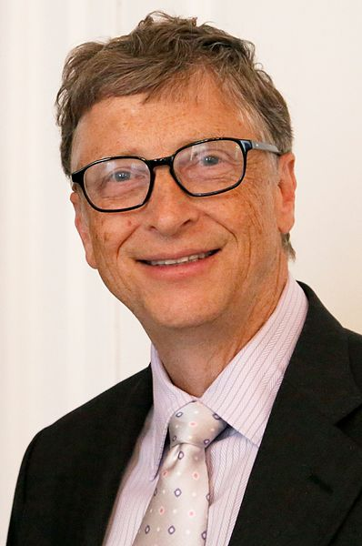
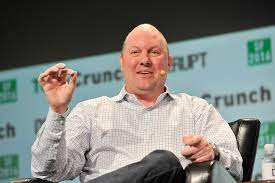

Ray Tomlinson
Raymond Samuel Tomlinson was the computer programmer who invented email. His employer, Bolt, Beranek and
Newman, worked on projects for ARPAnet, the predecessor of the Internet. In 1971, he sent the first email,
including an “@” symbol to designate an address, to another computer across the room.
Bill Gates

William Henry Gates III was a co-founder with Paul Allen of the software company Microsoft. In 1975, he
dropped out of Harvard to run the company that put the operating system DOS on every IBM personal computer.
Following Apple’s lead, they later developed “Windows”, a GUI (Graphical User Interface) for the operating
system. Microsoft continued to thrive with its Office suite, Internet Explorer and Edge web browsers, and
Xbox video games.
Paul Allen
Paul Gardner Allen was a computer scientist who partnered with his childhood friend Bill Gates to create
Microsoft. Together, they helped to usher in the personal computer revolution. His initial project was to
write the BASIC programming language to be used on Altair’s microcomputer. In 1980, they licensed to IBM the
MS-DOS operating system, which quickly became the dominant one for personal computers. He left the company
in 1983, becoming active in philanthropy and technology investing.
Steve Jobs
Steven Paul Jobs co-founded Apple Inc. in 1976. With co-founder Steve Wozniak, Jobs created one of the first
commercially successful personal computers. In the early 1980s, Jobs introduced a mouse-driven GUI
(Graphical User Interface) on the Macintosh personal computer, and Apple stayed in the forefront of hardware
and software development. He was forced to leave Apple in 1985, but returned as CEO in 1997, when Apple
bought his company NeXT. Apple went on to pioneer the iPhone in 2007, sparking the rise of the mobile
Internet.
Steve Wozniak

Stephen Gary Wozniak was a computer engineer who built the personal computer prototype for Apple Computer,
the company he co-founded with Steve Jobs. Wozniak was the primary architect of the highly successful
Macintosh personal computer, which featured a graphical user interface and a mouse. He left Apple in 1985,
investing time and money on entrepreneurial venture in technology, telecom and education.
Marc Andreessen

Marc Lowell Andreessen is an entrepreneur and software engineer who co-authored Mosaic, the first
widely-used web browser. Working with a team at the University of Illinois, they used Tim Berners-Lee’s
World Wide Web open standards to create a graphical Web browser that could display html files on personal
computers with an Internet connection. In 1993, he joined Jim Clark to found Netscape Communications. He
later co-founded Ning, which develops social networking platforms.
Jim Clark
James Henry Clark was a Stanford Computer Science professor who founded Silicon Graphics in 1982. In 1994,
he founded Netscape Communications with Marc Andreessen to commercialize the Netscape Navigator Web browser.
Netscape was acquired by AOL in 1999, and Clark went on to launch several other Internet companies in
healthcare, finance and mobile computing.